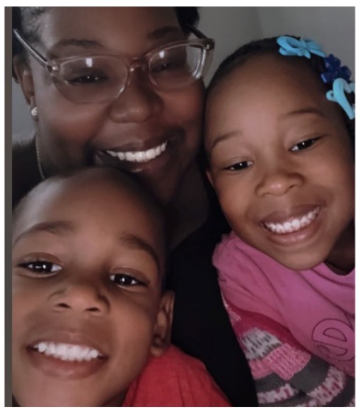

Values & Goals
- Building a brighter future for my kids
- Striving for excellence in my education
- Pursuing a meaningful career in technology
Welcome to my corner of the web! I am a dedicated student, an aspiring cybersecurity analyst, and a proud mom balancing academics with everyday life.

Juggling life as a mom of two while maintaining a 4.0 GPA in my IT and cybersecurity studies takes focus, resilience, and a lot of late-night dedication.
When I'm not hitting the books or practicing web development, you can find me enjoying quiet moments with a good book, listening to music, or making special memories with my children.